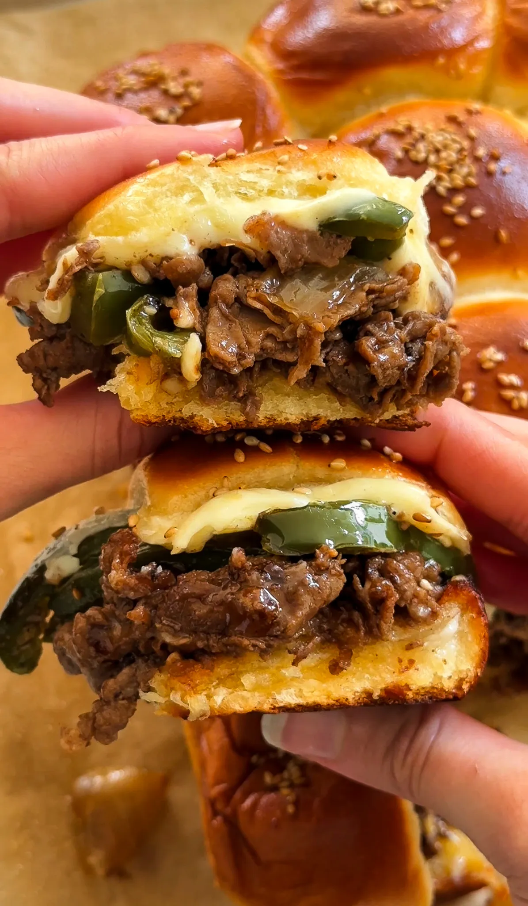

The Starving Artist Cookbook
Turkey Ham and Cheese Croissant Egg Bake
Prep Time:15 Minutes Cook Time:35 Minutes
Total Time:50 Minutes Yeilds:4

Ingredients
- 4 to 5 large croissants
- 8 slices cheddar cheese (1 to 2 per croissant)
- 12 slices turkey ham (2 to 3 per croissant)
- 4 large eggs
- ½ cup half and half
- 1/2 tablespoon yellow mustard
- salt, to taste
- black pepper, to taste
- 2 tablespoons unsalted butter, small cubes
Instructions
- Preheat the oven to 350°F and grease
a baking dish with butter.
- Slice each croissant in half horizontally. Layer 2 to 3
slices of turkey ham and 1 to 2 slices of cheddar cheese
inside each croissant, then close them back up. Feel free to
add more or less meat and cheese depending on
your preference.
- Cut each filled croissant into four equal sections and
arrange them snugly in the prepared baking dish.
- In a bowl, whisk together the eggs, half and half, mustard,
salt, and pepper until smooth.
- Pour the egg mixture evenly over the croissants, making sure
they soak up the custard. Let it sit for 5 minutes.
- Dot the top with butter and cover with foil.
- Bake covered for 20-25 minutes. Uncover and cook for 10 more
minutes or until golden brown and set.
- Serve warm and enjoy!
Honey Jalapeno Chicken
Prep Time:20 Minutes Cook Time:25 Minutes
Total Time:45 Minutes Yeilds:4-5

Ingredients
Chicken
- 1 1/2 pounds chicken thighs, boneless and skinless, chopped
into bite-sized pieces
- 1/3 cup cornstarch
- 1 teaspoon chili powder
- 1 teaspoon salt
- 1/2 teaspoon black pepper
- 2 tablespoons neutral oil
Sauce
- 3 tablespoons honey
- 1 tablespoon brown sugar
- 1/4 cup soy sauce
- 1/4 cup water
- 1 tablespoon rice vinegar
- 1 tablespoon minced garlic
- 2 teaspoons ginger paste
- 1/2 teaspoon sesame oil
- 2 teaspoons cornstarch
Vegetables
- 1/2 yellow onion, sliced
- 2 jalapeños, sliced and seeds removed
Garnish
- 2 tablespoons chopped fresh cilantro
- green onions, chopped
- toasted sesame seeds
Instructions
- Prepare the Chicken: In a bowl, toss the chopped chicken
thighs with cornstarch, salt, and black pepper until evenly
coated.
- Cook the Chicken: Heat the neutral oil in a
large skillet or wok over medium-high heat. Add the
chicken in batches if necessary, and cook until golden
brown and crispy on the outside and cooked through on
the inside, about 6-8 minutes. Remove the chicken from
the pan and set aside.
- Cook the Vegetables: In the same pan, add the sliced
onion and jalapeños. Sauté for 2-3 minutes until the
vegetables are slightly softened but still vibrant. Remove
the vegetables from the pan and set aside.
- Prepare the Sauce: In a bowl, whisk together the
brown sugar, soy sauce, rice vinegar, sesame oil, water,
and cornstarch until combined.
- Thicken the Sauce: Return the skillet to medium heat
and pour in the sauce. Cook for a few minutes,
stirring continuously, until the sauce thickens.
- Combine and Finish: Add the cooked chicken and
vegetables back into the skillet, tossing to coat
everything evenly in the sauce. Cook for an additional
1-2 minutes to heat through.
- Garnish and Serve: Remove from heat and stir in the
chopped cilantro. Garnish with green onions and sesame
seeds. Serve hot with rice or your favorite side.
Philly Cheesesteak Sliders
Prep Time:15 Minutes Cook Time:25 Minutes
Total Time:45 Minutes Yeilds:12 Sliders

Ingredients
Steak
- 1 pound thinly shaved steak
- 1 tablespoon unsalted butter
- 1 tablespoon neutral oil
- 1/2 to 3/4 teaspoon salt
- 1 teaspoon paprika
- 1/2 teaspoon mustard powder
- 1/4 teaspoon black pepper
- 1 tablespoon Worcestershire sauce
- 1/4 cup beef broth
Veggies
- 1/2 large yellow onion, diced
- 1 green bell pepper, thinly sliced
- 1 tablespoon neutral oil
- salt, to taste
- black pepper, to taste
- 1/2 tablespoon minced garlic
For Assembly
- 12-pack Hawaiian rolls
- mayonnaise, for toasting bread (optional)
- 4 to 6 slices cheese (Cooper Sharp,
provolone, or cheese wiz)
- melted unsalted butter, for brushing tops
- toasted sesame seeds
Instructions
- Cook the Veggies: In a pan over medium heat,
add neutral oil. Once hot, toss in the diced
onion and sliced bell pepper. Season with a pinch
of salt and black pepper. Sauté until softened and
slightly caramelized, about 5 to 7 minutes. Stir in
the minced garlic and cook for 1 to 2 minutes until
fragrant. Remove from the pan and set aside.
- Cook the Steak: In the same pan, melt butter with
neutral oil over medium-high heat. Add the shaved steak,
breaking it apart as it cooks. Season with salt, paprika,
mustard powder, and black pepper. Once the steak is
browned, pour in Worcestershire sauce and cook for
another minute. Then, pour in the beef broth to
deglaze the pan, scraping up any browned bits for
extra flavor. Let it simmer for 2 minutes until slightly
reduced. Remove from heat.
- Prepare the Rolls: Preheat the oven to 350°F
(175°C). Keeping the Hawaiian rolls connected, slice
them in half horizontally. Spread a thin layer of
mayonnaise on the cut sides. Place them mayo-side up on
a baking sheet and toast in the oven for a few minutes
until lightly golden.
- Assemble the Sliders: Place the bottom half of the
toasted rolls in a baking dish or tray. Evenly spread the
cooked steak over the bread, then layer the sautéed veggies
on top. Add your choice of Cooper Sharp, provolone, or
Cheese Whiz over the veggies. Place the top half of the
rolls on.
- Finish and Bake: Brush the tops with melted butter
and sprinkle with toasted sesame seeds. Cover loosely
with foil and bake for 10 to 15 minutes until the cheese
is melted. Then, remove the foil and bake for another 5
minutes until the tops are golden brown.
- Serve: Let the sliders cool slightly before pulling them
apart. Enjoy warm!